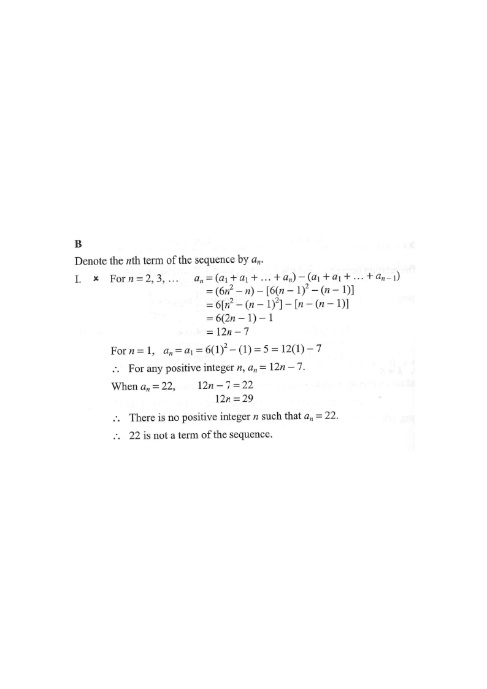

Step 1 — given: $S_n = 6n^2-n$.
HKDSE 2018 · Paper 2 · Q35 · Formulas & Sequences
If the sum of the first $n$ terms of a sequence is
$S_n = 6n^2 - n$,
which of the following is/are true?
I. 22 is a term of the sequence.
II. The 1st term of the sequence is 5.
III. The sequence is a geometric sequence.

Denote the $n$th term by $a_n$. For any $n\ge 2$, $$a_n = S_n - S_{n-1}.$$
Hint: the $n$th term is the extra amount added when you increase the number of terms from $n-1$ to $n$.
For $n = 2,3,\dots$, $$\begin{aligned} a_n &= S_n - S_{n-1}\\ &= (6n^2-n)-\big[6(n-1)^2-(n-1)\big]\\ &= 6\big[n^2-(n-1)^2\big]-\big[n-(n-1)\big]\\ &= 6(2n-1)-1\\ &= 12n-7. \end{aligned}$$
For $n=1$: $\;a_1 = S_1 = 6(1)^2-1 = 5 = 12(1)-7$.
$\therefore$ for every positive integer $n$, $\;a_n = 12n-7$.
Hint: always check $n=1$ separately — the formula $a_n=S_n-S_{n-1}$ is only valid for $n\ge2$.
Set $a_n = 22$: $$12n - 7 = 22 \;\Rightarrow\; 12n = 29 \;\Rightarrow\; n = \tfrac{29}{12}.$$
There is no positive integer $n$ with $a_n = 22$, so 22 is not a term. Statement I is FALSE.
Hint: $n$ must be a positive integer; a non-integer solution rejects the value.
From Step 2, $\;a_1 = S_1 = 6(1)^2-1 = 5$. Equivalently $a_1 = 12(1)-7 = 5$. Statement II is TRUE.
Hint: the first term equals the first partial sum, $a_1 = S_1$.
Examine the ratio of consecutive terms: $$\frac{a_{n+1}}{a_n}=\frac{12(n+1)-7}{12n-7}=\frac{12n+5}{12n-7} = 1+\frac{12}{12n-7}.$$
This ratio depends on $n$ (e.g. $n=1$: $17/5$; $n=2$: $29/17$), so it is not constant. Statement III is FALSE.
Hint: a geometric sequence needs a constant common ratio — a common difference ($+12$) means it is arithmetic.
Only statement II is true. $$\therefore \text{ the answer is } \textbf{B (II only)}.$$
Hint: test each Roman-numeral claim independently before choosing the option.
Question. The sum of the first \\(n\\) terms of a sequence is \\(S_{n}=5n^{2}+2n\\).
(a) Find the \\(n\\)th term \\(a_{n}\\).
(b) Is \\(47\\) a term of the sequence?
(c) Is the sequence geometric?